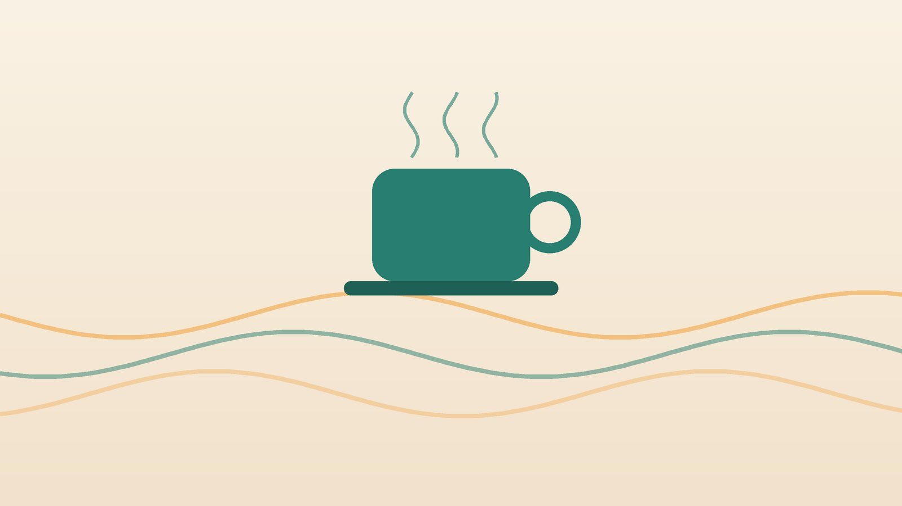

건강 칼럼 · 인천 위경련 한의원
명치가 쥐어짜듯 아플 때, 위경련 응급 신호와 한방 관리

나의 명치 통증, 어떤 모습인가요?
- 찬 음식이나 찬 음료 뒤에 갑자기 쥐어짜듯 아프다
- 화가 나거나 긴장한 뒤 명치가 조인다
- 과식하거나 급하게 먹은 뒤 아프다
- 웅크리면 조금 나아진다
- 몇 주에 한 번씩 비슷한 통증이 반복된다
이 체크리스트는 진단 도구가 아니라 상담이 필요한지 가늠해 보는 참고용입니다.
위경련과 헷갈리는 응급 질환
- 심근경색: 명치나 가슴이 조이며 식은땀, 숨참, 왼팔·턱 통증이 동반될 때
- 급성 담낭염·담석: 기름진 식사 뒤 오른쪽 윗배와 등까지 아플 때
- 급성 췌장염: 음주 뒤 등까지 뻗치는 심한 통증과 구토가 있을 때
- 충수염: 명치에서 시작한 통증이 오른쪽 아랫배로 옮겨갈 때
- 위궤양 출혈: 검은 변이나 피를 토할 때
이런 신호가 있거나 통증이 30분 넘게 점점 심해지면 즉시 응급실이나 119를 이용하세요.
위경련이란 무엇인가요?
위경련은 정식 진단명이라기보다 명치가 쥐어짜듯 아픈 증상을 일상에서 부르는 말입니다. 과식, 찬 음식, 스트레스, 급하게 먹는 습관 뒤에 잘 나타나며, 반복된다면 기능성 소화불량이나 위염, 위궤양이 함께 있는지 살펴봐야 합니다. 국제 진단 기준인 로마 기준은 검사에서 이상이 없는데도 명치 통증이나 속쓰림, 식후 더부룩함이 반복되는 경우를 기능성 소화불량으로 분류합니다.
한의학은 급성 위통을 어떻게 보나요?
한의학에서는 명치가 갑자기 아픈 것을 위완통(胃脘痛), 특히 심하게 쥐어짜는 것을 급통(急痛)으로 보았습니다. 찬 기운은 '수축하고 당기는 성질'이 있어 위를 움츠리게 하고, 기운이 막히면 '부풀고 조이는 통증'이, 음식이 정체되면 '그득하게 누르는 통증'이 생긴다고 구분했습니다.
통증의 성질을 묻는 것은 그래서 중요합니다. 따뜻하게 하면 풀리는지, 화가 나면 심해지는지, 먹고 나면 심해지는지에 따라 위를 데울지, 긴장을 풀지, 음식을 내려보낼지가 정해집니다.
나는 어떤 유형일까?
1. 한사객위(寒邪客胃) 찬 기운에 움츠린 유형
- 이런 분에게 많아요
- 찬 음료와 아이스크림을 즐기는 분, 배가 찬 분
- 나타나는 모습
- 찬 것을 먹은 뒤 갑자기 쥐어짜듯 아프다
- 함께 오는 몸의 신호
- 따뜻하게 하면 풀림, 맑은 침, 오한
- 진찰에서 보이는 모습
- 설태가 희고 맥이 팽팽하고 느림
- 치료 방향
- 위를 데워 경련을 푸는 방향 (안중산·양부환 계열)
- 오늘부터 해 볼 것
- 여름에도 찬 음료는 한 번에 많이 마시지 마세요.
2. 간기범위(肝氣犯胃) 긴장이 위를 조이는 유형
- 이런 분에게 많아요
- 화를 참거나 스트레스가 큰 분
- 나타나는 모습
- 화나거나 긴장한 뒤 명치가 막히듯 아프다
- 함께 오는 몸의 신호
- 트림, 한숨, 옆구리 당김
- 진찰에서 보이는 모습
- 맥이 팽팽함
- 치료 방향
- 긴장을 풀고 경련을 가라앉히는 방향 (작약감초탕·사역산 계열)
- 오늘부터 해 볼 것
- 통증이 올 때 숨을 길게 내쉬며 배를 따뜻하게 하세요.
3. 식적(食積) 음식이 정체된 유형
- 이런 분에게 많아요
- 과식과 야식, 급하게 먹는 습관이 있는 분
- 나타나는 모습
- 먹은 뒤 명치가 그득하게 누르듯 아프다
- 함께 오는 몸의 신호
- 신물 트림, 구토하면 편해짐, 입냄새
- 진찰에서 보이는 모습
- 설태가 두껍고 끈적함
- 치료 방향
- 정체된 음식을 내려보내는 방향 (평위산·보화환 계열)
- 오늘부터 해 볼 것
- 한 숟가락에 20번 이상 씹으며 천천히 드세요.
한의원에서는 어떻게 진찰하나요?
- 문진: 통증이 시작된 상황, 성질, 지속 시간, 응급 신호 여부를 먼저 확인합니다.
- 복진: 명치의 긴장과 압통, 온도를 손으로 확인합니다.
- 설진·맥진: 찬 기운, 긴장, 음식 정체의 비중을 판단합니다.
침·약침·한약 치료는 어떻게 하나요?
1. 침 치료
- 양구(梁丘): 무릎뼈 바깥 위쪽. 급성 위통에 전통적으로 써 온 혈입니다.
- 내관(內關): 손목 안쪽. 경련과 메스꺼움에 씁니다.
- 족삼리(足三里): 무릎 아래 바깥쪽.
- 합곡(合谷): 손등 엄지와 검지 사이.
2. 약침
통증이 자주 반복되는 분은 명치 주변과 등의 관련 경혈에 약침을 적용해 굳어 있는 복부와 등 근육을 이완시킵니다.
3. 한약
쥐어짜는 경련성 통증에는 근육 경련을 푸는 작약감초탕이 대표적이며, 유형에 따라 위를 데우거나 음식을 내려보내는 약재를 더합니다.
원장님이 네이버 블로그에 진료 이야기와 건강 정보를 꾸준히 올리고 있습니다. 더 많은 이야기는 블로그에서 확인해 보세요.
블로그 보기치료는 어떤 순서로 진행되나요?
- 첫 진료 응급 질환 가능성과 검사 필요 여부를 확인하고 유형을 정합니다.
- 1~2주차 침 치료와 한약으로 위의 예민함을 낮춥니다.
- 3~4주차 식습관과 생활 습관을 함께 바꾸며 재발 간격을 확인합니다.
- 유지기 통증이 잦았던 계절이나 상황에 맞춰 관리합니다.
기간과 횟수는 증상이 얼마나 오래되었는지, 동반 증상이 무엇인지에 따라 달라지며, 진찰 후 개인별로 안내합니다.
통증이 왔을 때, 그리고 예방하려면
통증 순간
- 몸을 웅크리고 배를 따뜻하게 합니다.
- 음식 섭취를 멈추고 따뜻한 물을 조금씩 마십니다.
- 무릎 위 양구혈과 손목 내관혈을 지그시 누릅니다.
- 30분이 지나도 가라앉지 않거나 점점 심해지면 병원으로 갑니다.
예방 식습관
- 한 숟가락에 20번 이상 씹으며 15분 이상 천천히 식사합니다.
- 공복에 커피, 찬 음료, 술을 마시지 않습니다.
- 잠들기 3시간 전에는 식사를 마칩니다.
- 식후 바로 눕지 않고 가볍게 걷습니다.
다른 진료가 먼저인 경우
- 명치 통증이 한 달에 여러 번 반복되거나 체중이 줄고 있다면 위내시경과 복부 초음파로 원인을 확인하세요.
- 40세 이상이거나 가족 중 위암 환자가 있다면 더욱 검사를 권합니다.
- 진통제는 일부가 위 점막을 자극할 수 있어 먹기 전 약사나 의사와 상의하세요.
자주 묻는 질문 Q&A
- Q1. 위경련이 왔을 때 집에서 할 수 있는 것은?
- 몸을 웅크리고 배를 따뜻하게 하며 음식 섭취를 멈추세요. 30분이 지나도 가라앉지 않으면 병원 진료가 필요합니다.
- Q2. 진통제를 먹어도 되나요?
- 일부 진통제는 위 점막을 자극해 오히려 악화시킬 수 있어 먼저 상의하세요.
- Q3. 위내시경에서 정상인데 자주 아파요.
- 위의 움직임과 감각이 예민해진 경우가 많아 그 반응을 조절하는 치료와 식습관 관리가 도움이 됩니다.
- Q4. 한방 치료는 얼마나 받아야 하나요?
- 통증 빈도와 기간에 따라 다르며 보통 2~4주 동안 변화를 확인합니다.
- Q5. 소화제를 계속 먹어도 될까요?
- 증상을 잠시 덜어 줄 수 있지만 원인을 해결하지는 못합니다.
- Q6. 손을 따면 낫나요?
- 감염 위험이 있어 권하지 않습니다. 따뜻하게 하고 지압하는 방법이 더 안전합니다.
- Q7. 아이도 위경련이 생기나요?
- 아이의 복통은 원인이 다양해 소아청소년과 진료로 먼저 확인하세요.
- Q8. 위경련이 반복되면 큰 병인가요?
- 반복된다면 위염, 궤양, 담석 등을 확인하는 검사가 필요합니다.
문원열 대표원장한의사 · 365스마일한의원
인천 서구 가정동 한자리에서 10년 넘게 진료하며, 환자 한 분 한 분의 아픔을 깊이 들여다보고 근본적인 원인을 찾는 진료를 지향합니다.
진료 안내
- 진료시간
- 평일 09:00~20:00 (점심시간 13:00~14:00)
토·일·공휴일 09:00~15:00 - 주소
- 인천광역시 서구 가경주로 46, 2층 (가정동)
인천2호선 가정중앙시장역 인근
영상으로 길 안내 보기 → - 주차
- 한의원 건물 바로 앞 1층 도원주차장
- 예약
- 예약 바로가기 또는 전화 예약
진료시간은 사정에 따라 바뀔 수 있으니 방문 전 전화로 확인해 주세요.
함께 읽으면 좋은 칼럼
건강 칼럼 전체 보기 →

참고 자료
- Stanghellini V, et al. Gastroduodenal Disorders (Rome IV). Gastroenterology, 2016 — 원문
- 질병관리청 국가건강정보포털 — 원문
※ 이 글은 일반적인 건강 정보이며, 개인의 상태에 따라 치료 방법과 결과는 다를 수 있습니다. 정확한 진단과 치료는 진료를 통해 결정됩니다. 침·약침 시술 후 드물게 멍, 통증 등이 생길 수 있습니다.